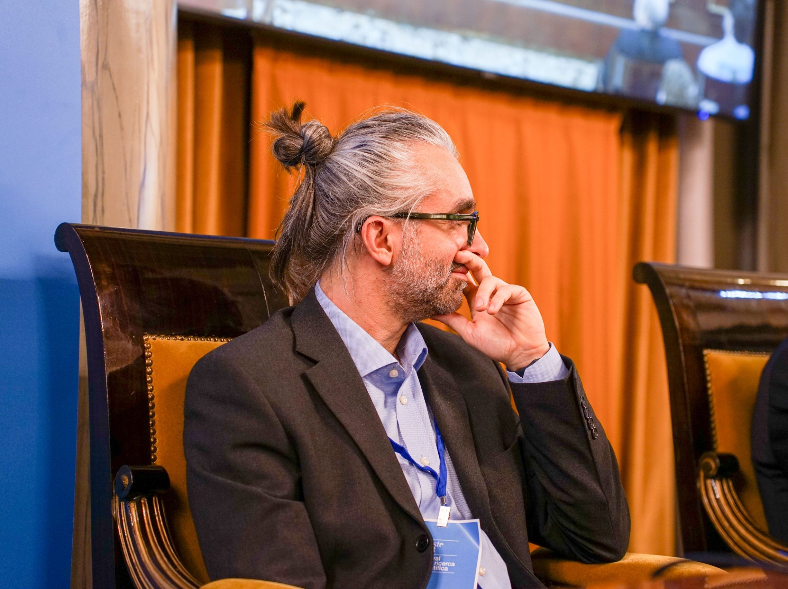
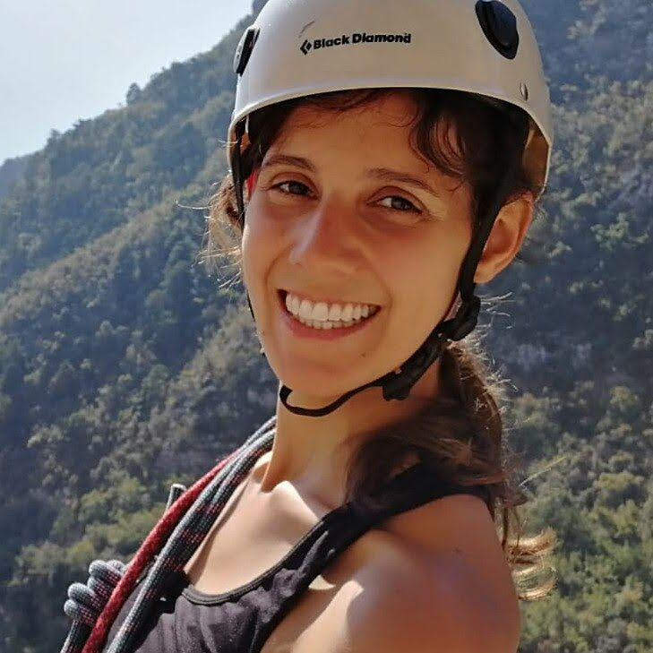
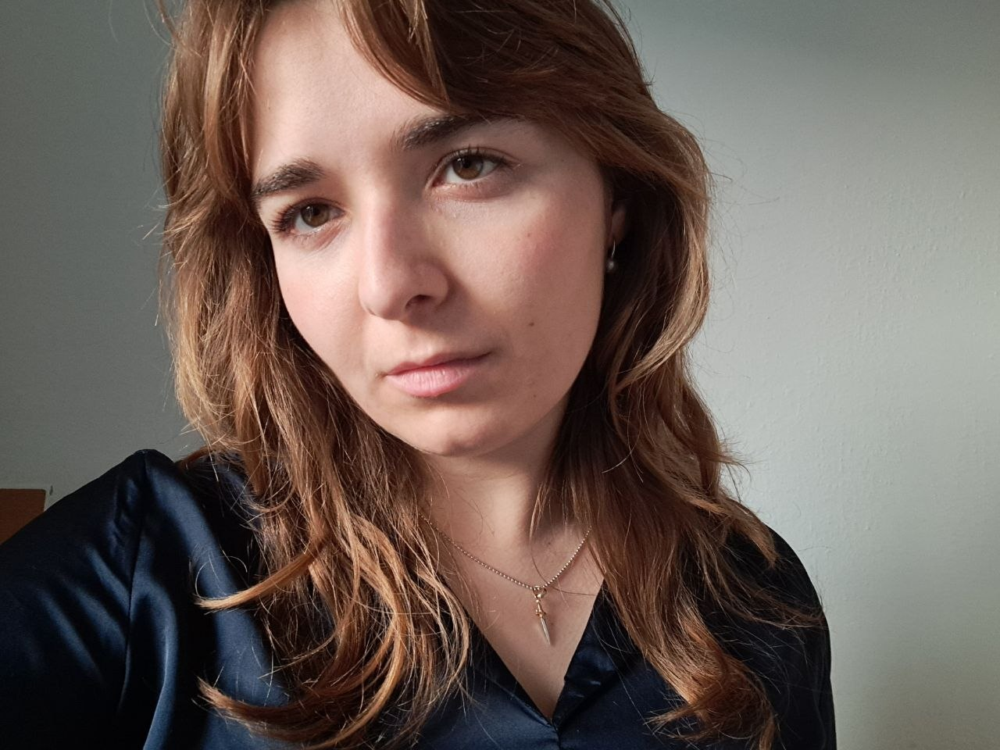
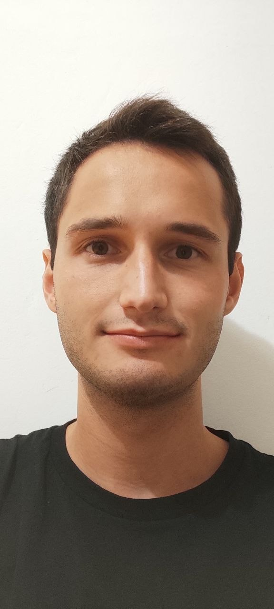
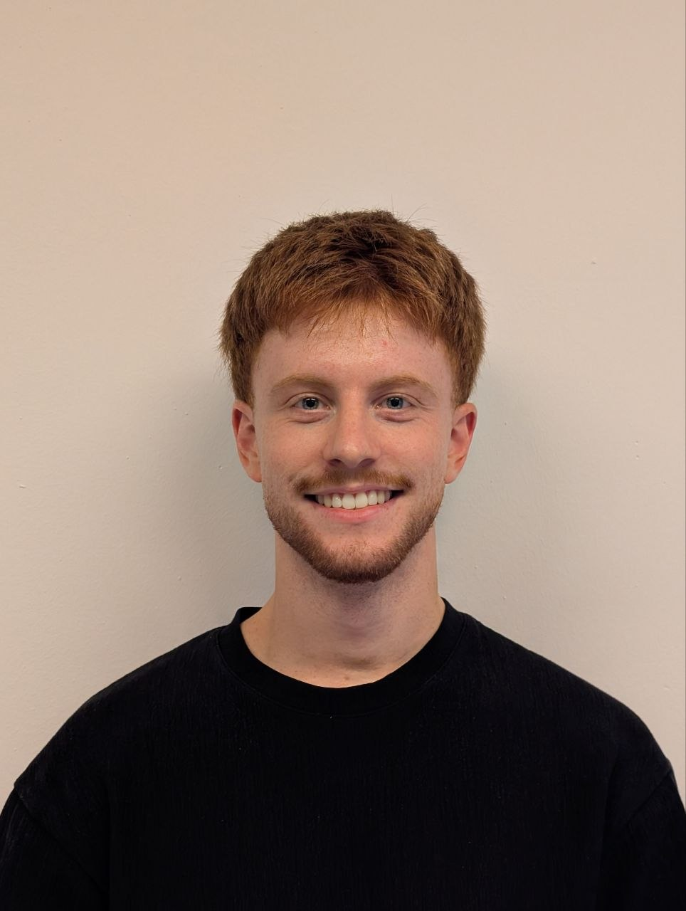

Luca Bortolussi
Principal Investigatortrustworthy GenAIneuro-explicitformal methods

Francesca Cairoli
Assistant Professor (RTT)safe autonomymulti-agent systemsneuro-symbolic AIuncertainty quantification
Gaia Saveri
Postdocneuro-symbolicBPMNGenAI

Simone Silvetti
Postdocformal methodsneuro-explicitinterpretability

Sara Candussio
PhD StudentLLMreasoning tracestrustworthy GenAI

Sandro Junior Della Rovere
PhD Studentelectronic design automationanalog integrated circuit layoutreinforcement learning

Alessandro Della Siega
PhD Studentneuro-explicitinterpretabilitytime series
Gabriele Gavino Pintus
PhD Student
Lorenzo Cusin
PhD Studenttrustworthy GenAILLM